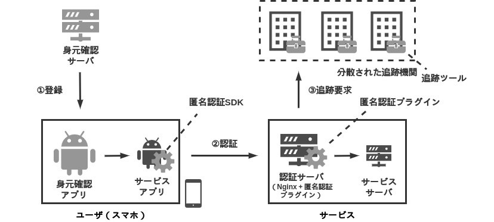

背景
インターネット上のサービス（e.g., マッチングアプリ，匿名掲示板）において，不正（e.g., 誹謗中傷，サイバー攻撃）が問題となっている．身元確認などを用いて，不正が起きた際に追跡し否認できないようにする方法があるが，ユーザの追跡をできることは，プライバシに関する懸念を与える．
目的
インターネット上のサービス（e.g., 匿名掲示板アプリ，マッチングアプリ）において，要件 1-3 を少ない実装コストと運用コストで満たせるようにする．
要件 1 匿名性.
ユーザは匿名でサービスを利用することができる．
要件 2 追跡可能性.
ユーザが不正をした場合，サービス側はユーザを追跡できる．
要件 3 否認不可能性.
ユーザは自身の不正に対し， 否認することができない．
課題
フェアブラインド署名方式を用いた認証[1]などの技術はすでに存在しているが，ユーザが利用する実環境（モバイル環境）で匿名認証を行うための環境が揃っていない．サービスの提供者が第三者機関と暗号関係のエンジニアを集めて，自力で匿名認証を実装するのは難しいため，サービス上で匿名認証をすることができない．
目的
課題 を解決するため，モバイル向け匿名認証プラットフォーム AIAS(Anonymous Identity Auth Service)を実装・提供する． AIAS はサービスに代わって，匿名認証に必要な暗号処理を行うため，サービス提供者は暗号関係の処理を実装する必要がなく，暗号関係のエンジニアがいない多くのサービスで匿名認証を利用できる．
仕様
AIAS を以下のソフトウェアと手続きから定義する．

ソフトウェア
AIAS はサービスアプリ，サービスサーバ，身元確認アプリ，身元確認サーバ，追跡ツールから成り立つ．
サービスアプリ
ユーザにサービスを提供するモバイルアプリアプリケーションである．
認証サーバを通してサービスサーバと通信する．実装対象外．
サービスサーバ
認証サーバを通してサービスアプリと通信するサーバである．実装対象外．
身元確認アプリ
ユーザの身元を eKYC を確認するモバイルアプリケーションである．
身元確認サーバ
身元確認アプリから身元のデータ受け取り，フェアブラインド署名方式を用いた証明書を作成する．
匿名認証 SDK
サービスアプリの向けの匿名認証 SDK である．認証に必要な情報を生成する．
認証サーバ（Nginx）
サービスサーバの提供者が持つ，認証用のリバースプロキシである．匿名認証プラグインが設定されている．
匿名認証プラグイン
Nginx 向けの匿名認証を行うプラグインである．
追跡ツール
追跡機関の持つツールセットである．署名からユーザを追跡するために必要な情報を生成することができる．
手続き
AIAS は参加，認証，追跡の手続きから成り立つ．
参加
サービスアプリは，身元確認サーバに登録要求する．身元確認アプリは eKYC を用いて身元確認サーバに対して，自身の身元を証明する．身元を証明した後，フェアブラインド署名を用いた署名方式の証明書を発行してサービスアプリを送信する．
認証
サービスアプリは送りたいデータに対して署名をし，証明書とともにサービスサーバに送信する．サービスサーバは署名と証明書を検証する．
追跡
サービスサーバの管理者は各追跡機関に対して署名を送信する．追跡機関 は 証明書にあるフェアブラインド署名をもとに， 署名したメンバを特定する．
参考
[1] 千田浩司, et al. “代理アクセスを利用した匿名認証方式.” 情報処理学会研究報告コンピュータセキュリティ (CSEC) 2005.33 (2004-CSEC-028) (2005): 235-240.